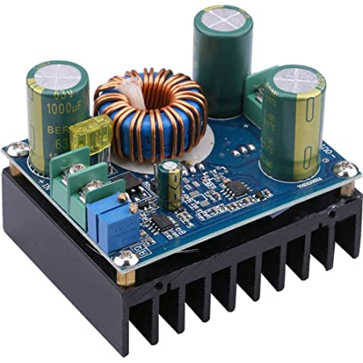
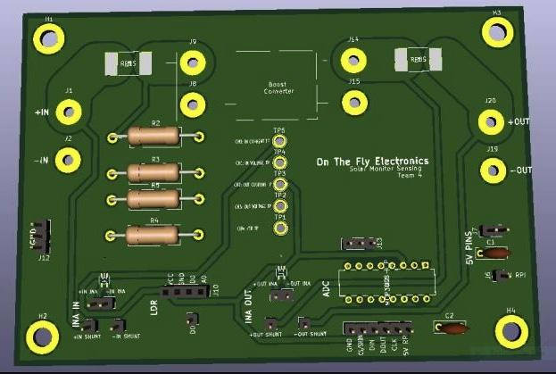

Description
This is a collaborative project done for Senior Design. The Solar Monitor is a user interface to record live data from a solar panel. The input and output voltage, current, and power can be observed in addition to light and temperature levels. Once the data has been recorded it can dynamically be displayed on a web page. Check out the full demo video here!
Microcontroller and Web Programmer
For this project I specifically worked on configuring the ADC converters with the sensing circuitry, and writing code to convert the received data into readable values. I was also involved with programming the web page so the data can be displayed in real time.
Components
We used a 600W DC to DC Boost Converter to take the voltage from the solar panel and boost it to a constant voltage before sending it to the load. This specific converter was chosen because it was able to achieve a 95% power efficiency.
 In order to perform all the
computations from the data that was taken by the sensing PCB's, we decided to use the RPI model 4B
as our main processing unit. We took advantage of its GPIO pins and we used its wifi capabilities to
host TCP/IP protocols for data transferring. This was done by setting the RPI as a host and data
packages were used to send out serially structured data to the webpage.
In order to perform all the
computations from the data that was taken by the sensing PCB's, we decided to use the RPI model 4B
as our main processing unit. We took advantage of its GPIO pins and we used its wifi capabilities to
host TCP/IP protocols for data transferring. This was done by setting the RPI as a host and data
packages were used to send out serially structured data to the webpage.
The bulk of the hardware were the sensing modules on the input and output PCB's. On the board we included an ADC, light intensity module, current sensor amplifier, and a temperature module. Once all the data is collected, it was ready to be parsed in .CSV file, where it was then displayed graphically on the web page for the user to see!
Sample Code for Configuring ADC
import spidev
import time
# Define Variables
delay = 0.5
ldr_channel = 0
voltage_channel = 1
# Create SPI
spi = spidev.SpiDev()
spi.open(0, 0)
#spi1 = spidev.SpiDev()
#spi1.open(0, 1)
def readadc(adcnum):
spi.max_speed_hz = 1350000
if adcnum > 3 or adcnum < 0:
return -1
r = spi.xfer2([1, 8 + adcnum << 4, 0])
data = ((r[1] & 3) << 8) + r[2]
return data
def readadc_voltage(adcnum1, vref = 5):
if adcnum1 > 3 or adcnum1 < 0:
return -1
spi.max_speed_hz = 10000
r = spi.xfer2([1, 8 + adcnum1 << 4, 0])
data = ((r[1] & 3) << 8) + r[2]
percent = (data)/10.23
voltage = (percent/100.0) * 5.5
return voltage
while True:
ldr_value = readadc(ldr_channel)
print
"---------------------------------------"
print("PhotoResistor Value: %d" % ldr_value)
#time.sleep(delay)
voltage_value = readadc_voltage(voltage_channel)
print
"---------------------------------------"
print("voltage Value: ", round(voltage_value,4))
time.sleep(delay)